PROTOTYPE 3 – DIALOGFLOW
Project Planning Summary

By Alice W Lin and Reane Nadina Sutoyo/p>
PROJECT PREPARATION
Week 1 (April 17th-april 23rd)
Video Link for the ChatBot
https://www.youtube.com/watch?v=_8EVFHVWLYY
This week, the bulk of our time will be spent getting everything in order and setting up the tracking system to manage all of our project features. This includes "Todo list," "In progress," "Ready for testing," "In testing," "Unit Tested," "Completed" that will make using an excel page. Each is tagged with its respective platform, working on it, and when it is expected to be completed. Additionally, we are also using a Microsoft OneDrive to store progress, resources, and other assets and documents. To better coordinate our activities, we have set up an Excel spreadsheet and are using Microsoft Teams to coordinate our team's activities.
Week 2 (April 24th- April 30th)
Areas explored this week:
- platform research and comparison
- Dialogflow research
- Exploring Dialogflow console
PLATFORM RESEARCH & COMPARISON
We discussed and covered some of the most common AIML (Artificial Intelligence Markup Language) modeling systems. This includes Dialogflow, a chatbot available on Google's Cloud, Discord, Microsoft Azure, and Lex by AWS Chatbot.
- API.ai (it’s inituitive interface and the most popular among developers and companies.)
- WIT.ai
- Motion.ai
- OnSequel
- Chatfuel
- Botsify
- ManyChat
What can I do with Chatbots?
- Get customized notifications and news.
- A bot can act as a smart newspaper, sending you a relevant content as soon as it’s published.
- Integrate with other services
- A bot can enrich website with contents from external services like IMD, Wiki, Youtube, GitHub, Foursquare
- Create custom tools
- Build single and multiplayer games
- A bot can play chess and checkers against you, act as host in quiz games or even take up the dungeon master’s dice for an RPG
- Build Social Services
- A bot could connect with people looking for conversation partners based on common interest or proximity.
We took into account the following factors when deciding on some of the best platforms:
- Easy integration to a variety of platforms such as website's web chat service, potentially Facebook and other social media platforms, IoTs like Alexa by amazon, Cortana, and google assistant
- Easy usage without too much coding
- The backend cloud computing is reliable and scalable
- Functional requirements such as allowing users to register on the application and saving their details to our database. They can re-visit their account/data again or continue their diagnosis.
- The chatbot should be relatively fast and should not take more than 5 seconds to respond to user questions
- The software is protected from faults or bugs
- Comply with data protect acts and is secure in terms of end-user data as well as programmer data.
DIALOGFLOW RESEARCH & INSIGHTS
Dialogflow, a Google-owned chatbot development platform that enables developers to develop audio and conversational chatbots to respond to user questions in multiple languages automatically, was another platform we explored. Some of the positive aspects that we found are the flexibility where Dialogflow allows our chatbots to be integrated into a large variety of media, its support on multiple types of devices, such as wearables, to phones, computers, and also the multi-language support, with more than 14+ languages available worldwide.
Alice and Reane have decided to test out this platform as a subgroup. /p>

EXPLORING THE CONSOLE & HOW IT WORKS
- We signed up to Dialogflow and created a new agent at console.dialogflow.com.
- Enabled all Permissions asked by Google Cloud Console to let us have access to the Dialogflow console. We started playing around with the system, followed mainly guides on google Dialogflow
- Below is the interface of Dialogflow, that we learnt how to use from the official google page, it was important for us to fully understand all the functions within the module to maximise our final prototype, we are able to manage everything needed to create this chatbot.

The design of the Dialogflow Console (above) is extremely straight forward and clean which we absolutely loved, very easy to use. Here is the explanation of all the key elements to build out chatbot, something very important for us to understand in order to produce a fully functional prototype:

https://cloud.google.com/architecture/building-and-deploying-chatbot-dialogflow.>
Integrations: this section is awesome and definitely a feature we will be using, this is where we can integration to our own website, and conversational platforms potentially for example Facebook, Twitter, Skype and other social media platforms, IoTs like Amazon Alexa, and Google Assistant (via a Google Home device or an Android smart phone) which are exactly the functions that we were looking for. Although different platforms, the chatbot will offer the same core chat functionality.

We explored Dialogflow as a Chatbot development platform by Google that enables developers to develop audio and conversational chatbots to automatically responds to user's questions in multiple languages. It is used for Natural language processing using Machine learning; it runs on the Google infrastructure. Infrastructure can be scaled according to your needs. We tested out the platform and found out some beneficial features that are available, for example, easy integration website's webchat service
Week 3 (May 1st – May 7th)
Creating the Dialogflow prototype will be the main focus of this week.
CREATING THE DIALOGFLOW PROTOTYPE
Week 1, we thoroughly learned the Dialogflow Console; this moved us to the next step. If we were to make this Prototype In real life, we had to split the work among us. Alice was responsible for mainly doing all the related research, writing, planning, and evaluation of the Prototype, while Reane would focus on the overall physical construction of the Prototype. We also created an architectural Design of our Prototype for a better understanding of how it works:
Chatbot Architectural Design
- Typical Chatbot Architecture consist of a bot engine, your own backend web application and a chat platform
- This message would go through your own web application, where you would validate it.
- If everything is okay the message would be sent to the bot engine(such as DialogFlow
- Bot engine would use techniques like Natural Language Processing and Machine Learning to form a response that is message to the user
- This would be sent back to your server, where you would validate and do the app logic.
- The benefit of using your own server, is that you can also communicate with other web services(other APIs) with your own database to store data from the user input or provide additional content for the user such as list of product, images and so on.

We made this flow chart so we can clearly demonstrate how the chatbot will operate
- The chatting process begins with the user interacting with the chatbot via our website, messaging platforms, IoTs platforms etc, by sending the first message, it can be either a greeting message or a request.
- Either way the message would be sent to our Dialogflow Chatbot
- Through NLP and ML Dialogflow will match the intent depending on the specific keywords of the greeting or request. Dialogflow is employed as the natural language understanding engine (NLU), which allows the chatbot to be trained to understand entities and intentions that are detected within a user statement.
- Will formulate response according to existing intent/entities/knowledge or external through webhooks (which will be a bit more complicated, additional software and hardware will be needed
- Other times Dialogflow Chatbot may ask for more information from the user if the chatbot does not recognize the question, or may lead users to websites related to their requests.
- Dialogflow will respond to the user
Week 4 (May 8th – May 14th)
Once everything was ready, we have started inputting all the intents and entities into our Dialogflow Chatbot.
CONTINUED THE DIALOG DESIGN AND INPUT OF DATA
As main focus of interaction is between the user and the chatbot, which is carried out through natural language, the conversation design is a crucial aspect to consider when designing the chatbot. To achieve this; appropriate dialog will be designed through the Dialogflow console using follow-up and fallback intents. A particular intent will be set, that once invoked by the user, the chatbot will end the conversation effectively regardless of the conversational context. The dialog is the collection of words and phrases used to respond to user input.
Dialogflow based on user’s input finds the User’s Intent, determines what Action should be taken and returns a respond.
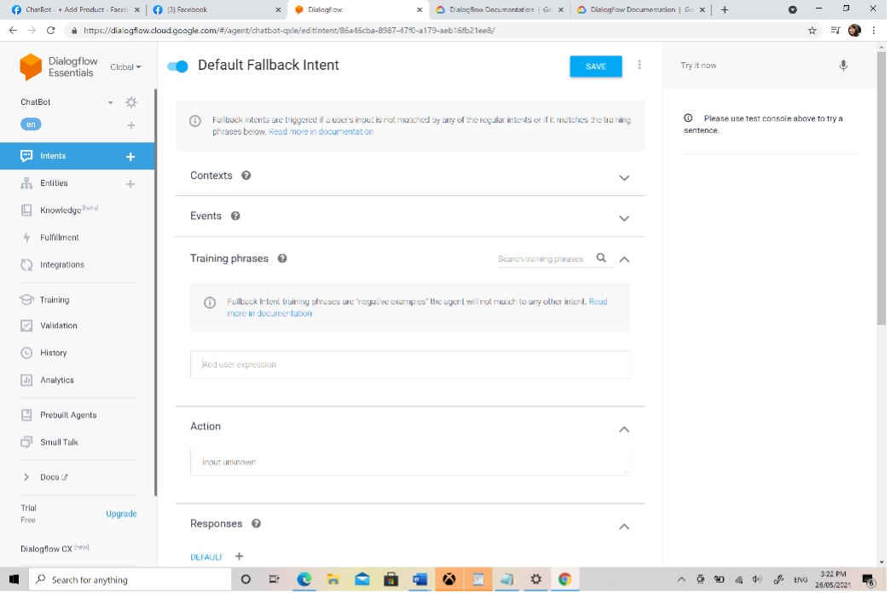
Week 5 (May-15th – May 21st)
- Our website
- Google Assisstant
Hardware Requirements
- Mobile Devices
- PC
- IoTs – Optional to test prototype - Google Home
Software Platforms and Development Tools
- Natural Language Processing (NLP) Platforms which is Dialogflow
- Google Cloud Platform – to integrate to google Assistant
- GitHub – to integrate to our website
- Facebook Page
- Facebook Developer account
The chatbot is ready and we have started to plan to Integrate our chatbot into other platforms which includes the following, below is the plan on how we will integrate to these platforms:
Integrating to our Github website:
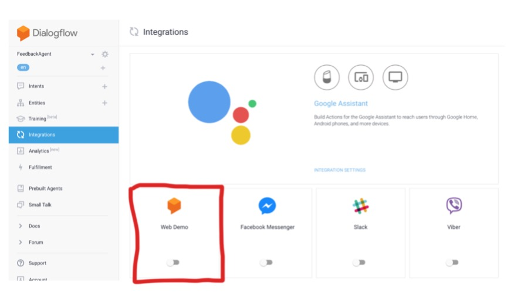
We switched the button to ON. You will see a URL where you can change the icon and title of your Agent, as well as a place where you can edit the URL.
It is most straightforward to integrate Dialogflow into an HTML page by using the iframe. Ensure that “Web Demo” is selected in the Integrations menu and that it is also checked in the box on the left. To use this method, you must copy and paste the HTML code on your website, and then click on the agent's name to go directly to their profile page.
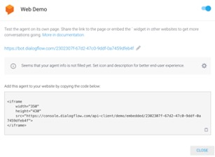
Integrating to our Facebook Messenger
Through some research, there is no official method for including chatbots as an option in customer support section on Facebook. The chatbot would be a completely replace the Facebook chat widget. Whenever a chat escalates, the user would receive a link to that page that the customer requested.
Below were the steps summarized from official google Dialogflow tutorial
- Once you've created your Dialogflow bot, we are ready to integrate to our facebook page.
- Create a Facebook fan page.
- Create a Facebook Developer account link here https://developers.facebook.com/apps.
- Use the Dialogflow connector integration to connect your Facebook app with the Dialogflow Agent. This is where Click on the INTEGRATIONS button on the sidebar menu and then click on Messenger From Facebook.
- And enable the Facebook Messenger. Where I will have callback Url and Page Access Token to get me started
- In Dialog Flow I need to choose Facebook Messenger and Click it after that the window pop up asking for Page Access Token, That Page Access Token is from the Facebook Developer Account for the Facebook Page that I have created.
- So after that I have to go settings in Facebook Page that I just created in developers Facebook account. So I have To Generate a token that link I will be use in DialogFlow. The content from the page and I going to make Verify Token which is long password that I created and unique in DialogFlow
- 8. Test the Chatbot on Facebook's Page or on Facebook Messenger. Visit the Facebook page that we’ve created. To see as page visitor, click on the View as Page Visitor option in the top menu bar. This chatbot will not be available to the general public. The limitation here is that only admins or the person who created the Facebook app can converse with the chatbot. The app needs to be distributed to everyone in order for it to be available.
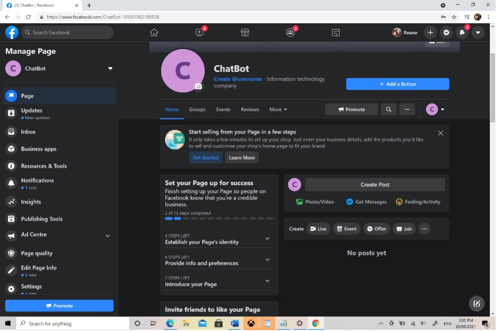
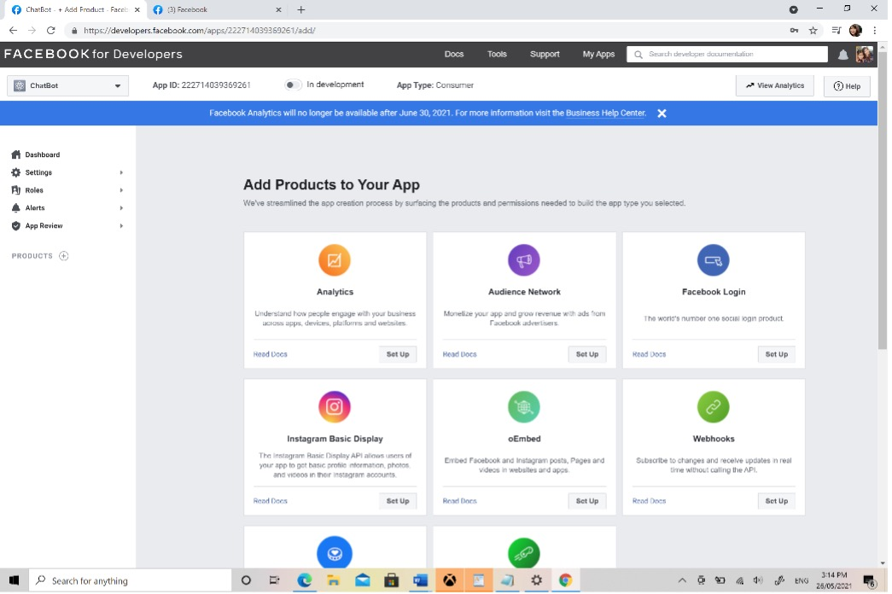
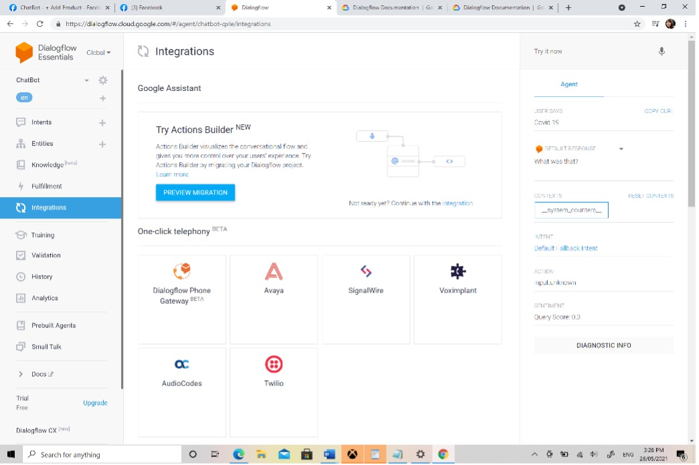
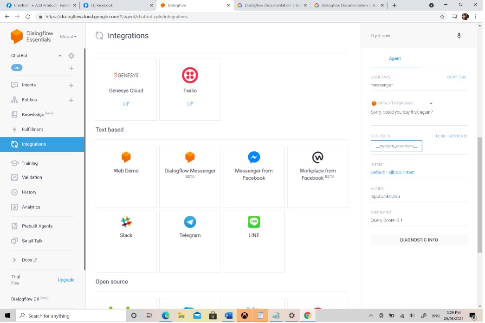
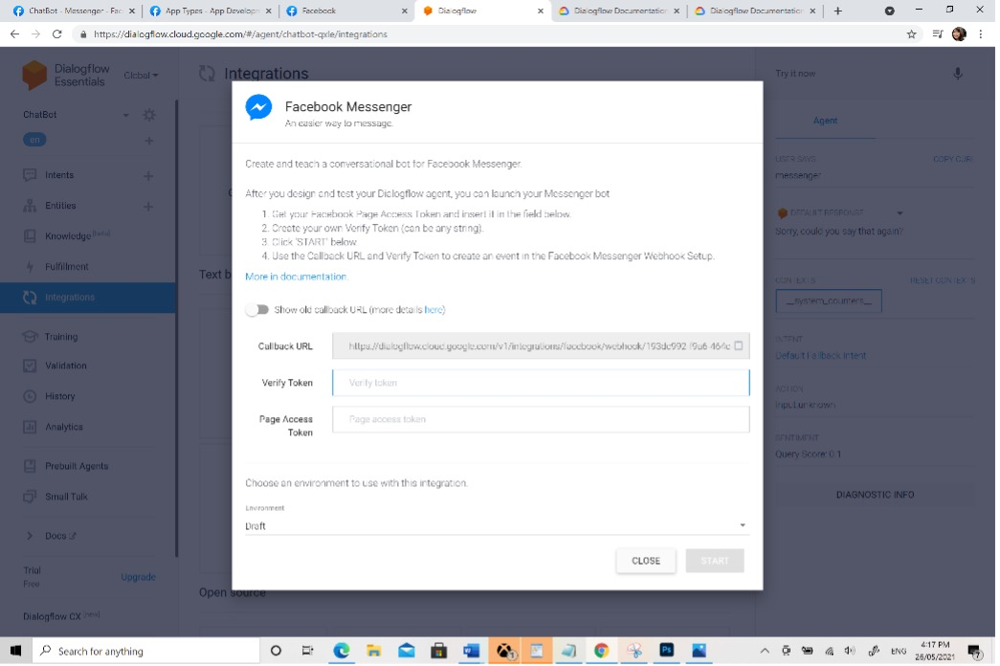
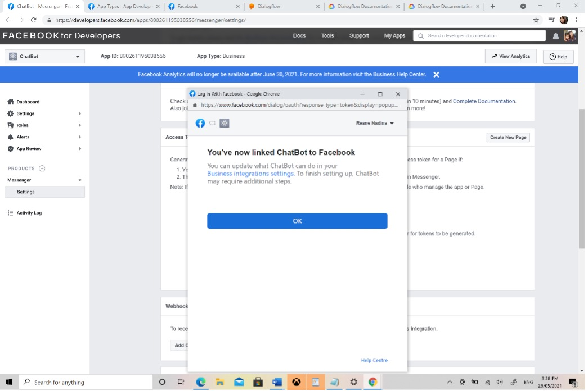
Integrating to Google Assistant
Prerequisite : Sign up for Google Cloud Platform (GCP)
We had to go through the registration process for a GCP account, which gives us a 2-month and $200 credit, which is enough to get started and covers most of our prototyping needs. We completed the sign-up process here:
https://cloud.google.com/free/
Once everything is prepared, we will take our chatbot to Google Assistant. We will have to revisit the Integration menu link in order to accomplish that. Similarly, to my earlier comment, we have integrations with a wide range of popular messaging platforms and interfaces.
“Google Assistant” is listed as one of the available options. In order to better serve our customers, the Google Assistant will be found on various devices, including smartphones, Google Home devices, and a variety of other google devices that will be available to our customers.
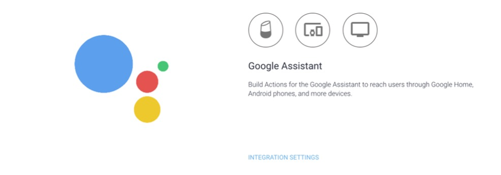
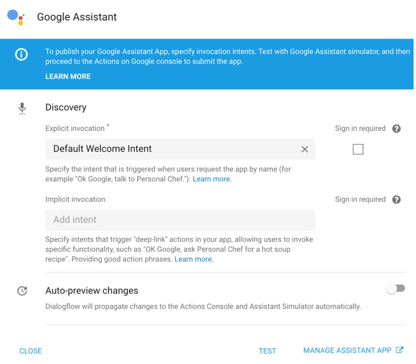
This will bring up Actions on Google configuration dialog as shown above, then we signed in to our GCP and clicked test A console that is similar to the GCP console is being taken to, which means that we're getting to the Actions for Google console.
Week 6 (May-15th – May 21st)
This week we mainly focused on testing. We first used the google built-in actional consoles action simulator to test the web interface that simulates the hardware and our settings to test our prototype quickly. To top it all off, we can view debug information regarding your fulfillment, such as the requests and responses it receives and sends.
We also have tested in multiple platforms to make sure our project is consistent and stable. We have three layers of testing unit testing, performance testing, load testing, and user testing. (More details about testing are down in the testing section) And mainly focused on writing and finalizing everything that was done.